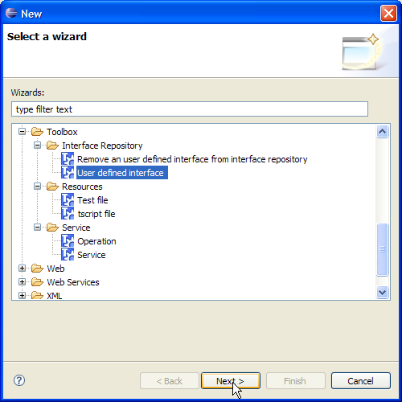
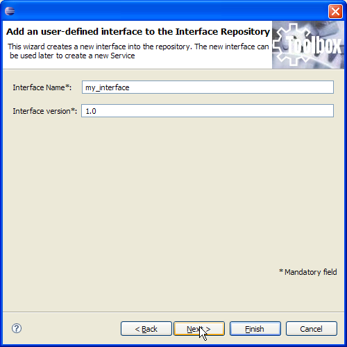
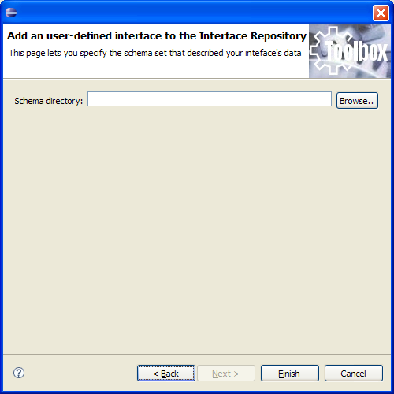
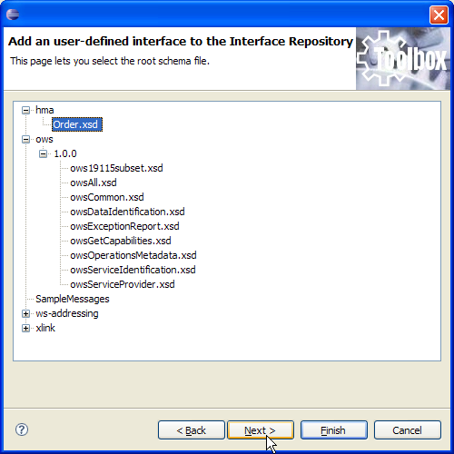
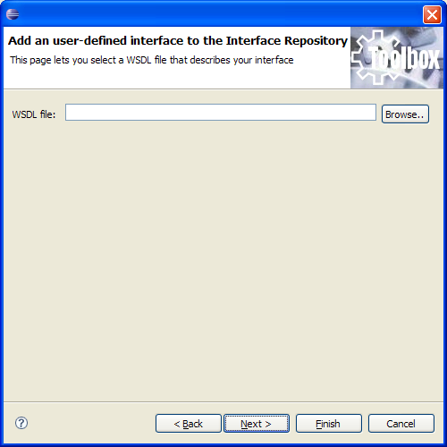
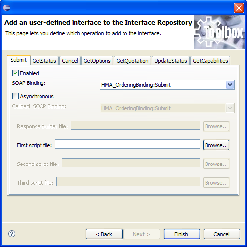
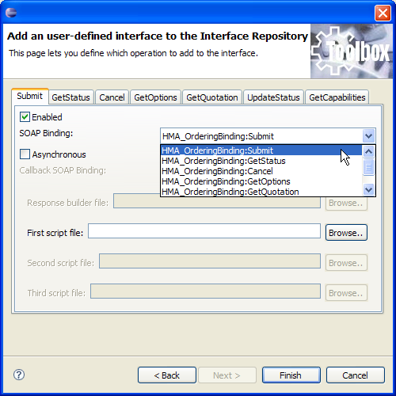
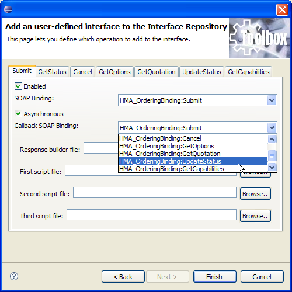

The internal Interface Repository can be populated with user provided interfaces. This will let the final user describe once an interface that will be implemented by more than one TOOLBOX service. This will speed up development in those cases where an interface is not natively provided by the TOOLBOX DE. In order to add an interface these files are needed:
To add an interface, the user have to select "New/Other" from the "File" menu. The below dialog is displayed. Select "Toolbox/Interface Repository/User defined interface" and click "Next".

The first step of the wizard asks the user for the name and version of the interface. When provided the user have to click on "Next" in order to move to the next wizard page.

This wizard page asks the user for the directory where the schema set is stored. The content of this directory will be used later for letting the user select the root file of the schema set. The user always have to keep in mind that the schema set shall all be stored under the provided schema directory. Schema files stored outside this directory won't be kept in consideration. The wizard can handle multiple subdirectories, so it is possible to organize the schema set in a complex structure. When the schema directory has been selected (either providing the full path or selecting it through the directory browing accessible with the "Browse" button), the user have to click on "Next" in order to move to the next page.

The figure below shows an example of schema set. In this case the HMA ordering schema set has been selected and it structure has been parsed by the wizard. The structure is provided as a tree. When the tree has been displayed, the user have to select the root schema (below Order.xsd has been selected) and click on "Next".

The next step asks the user to select a WSDL file that describes the interface. When provided click on "Next".

The next wizard page shows the result of parsing the WSDL file. For each port type, defined into the WSDL, a tab is shown. The figure below shows what can be obtained providing the WSDL for an HMA Ordering service. The first step that shall be performed is enabling those operations that the user wants to associate to the interface stored into the Interface Repository. The figure below shows how to add a Submit operation to the new interface. When enable, each tab let the user specify some necessary information.
SOAP Actions can be specified both for the operation and for it callback (if asynchronous), selecting them from drop downs, populated with all SOAP actions found into the WSDL file.
Template script file can be associated to the operation in order to be stored into the Interface Repository. These template files will be used when a new service and/or operation is created.

The figures below shows how to specify a SOAP Action for both the operation and its callback.


When all information are provided, the interface can be added clicking on "Finish".